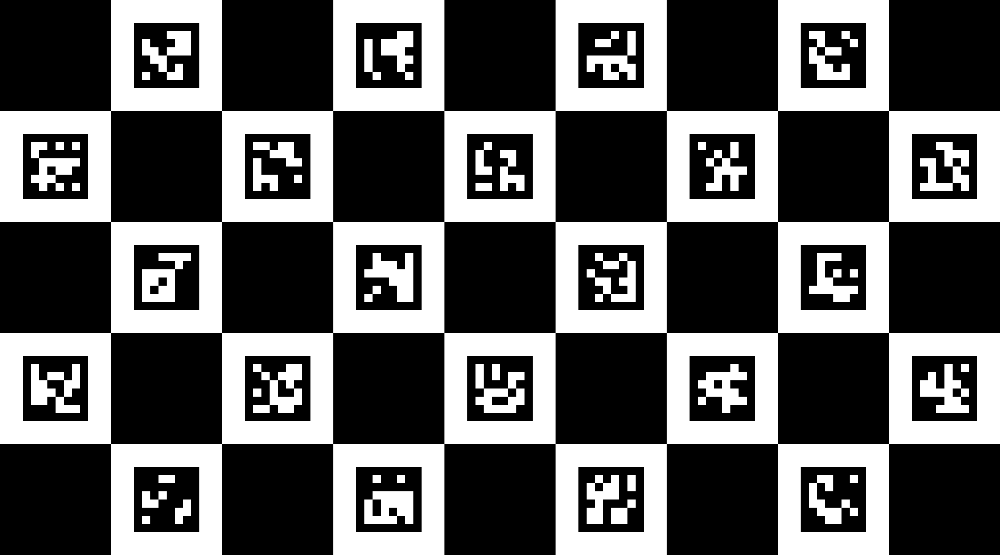

모니터 보정판
— 칸 240 px · 마커 144 px (사진 1픽셀 = 화면 1픽셀)
예상 칸 크기
-
(모니터 크기 597 × 336 mm 기준)
자로 잰
보드 짧은 쪽 (5칸)
:
mm → 칸
-
전체 화면 (Esc 로 나감)
이 상자 숨기기
밝기 최대 · 야간 모드 끄기 · 브라우저 확대 100 % · 반사 없게. 녹화 첫 1~2초는 보드를 비춰서 초점을 맞추세요.